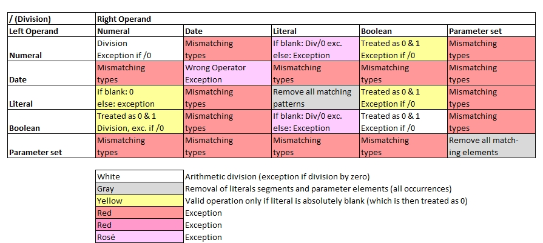

Introduction
Basic rules to divisions:
- Numbers are divided with each other as learned in 2nd grade.
- Boolean values are converted to 0 and 1 first.
- Literal strings: All occurrences of the (sub-)string in the right operand found in the left operand will be removed.
- Parameter sets: All occurrences of the elements in the right operand found in the left operand will be removed.
- Special rules apply on arithmetics with dates and times which are described further below.
- Special rules apply to some operations with different data types. See the table below for details.

a[0] = 5 / 3;
a[1] = '' / 10; // Blank = 0
a[2] = 0.5 * true;
a[3] = { a, b, c, c, d } / { b, c }; // Removes all matching elements
a[4] = This is a great tiger / i; // All i's removed
for all variables( a[], b[] ) echo( b[] );1.6666666667
0
0.5
{'a','d'}
Ths s a great tger